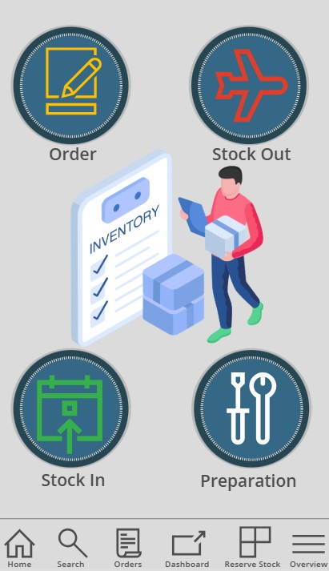
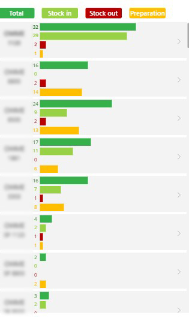
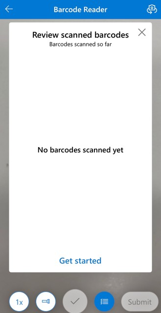
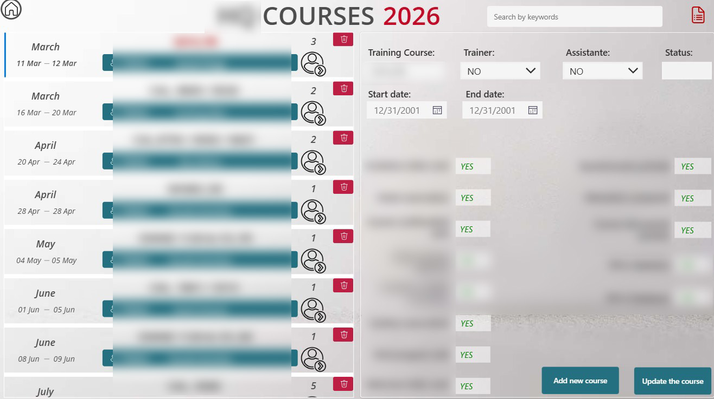
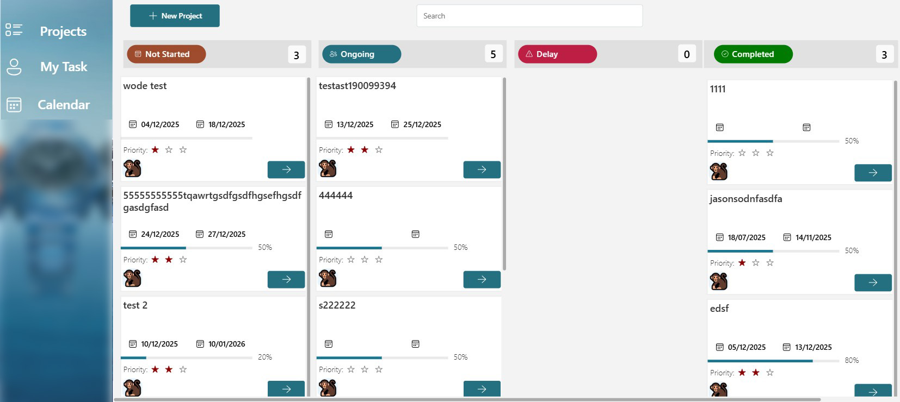

Inventory Management App
The client’s inventory was previously tracked manually, leading to heavy workload, frequent errors, and limited visibility.
I built a QR‑code driven inventory management system using Power Apps and SharePoint that fully digitized the process.
The app now captures user identity, location, timestamps, and real‑time stock quantities with every scan.
This transformed their workflow from slow and error‑prone to fast, accurate, and fully traceable—dramatically improving efficiency and data reliability across the team.
Tools: Power Apps, SharePoint, Power Automate.
  
Training Registration Automation
The client previously managed training registrations manually, resulting in scattered data, duplicated work, and frequent delays.
I built a Training Course App that fully automates the process: users register through a Microsoft Forms self‑service form, data is instantly stored in SharePoint,
and administrators manage everything through a Power Apps dashboard.
The system also auto‑generates related documents, eliminating repetitive tasks and giving the team a fast, reliable, and scalable training management workflow.
Tools: Power Apps, SharePoint, Power Automate.

Project Tracking & Assignment App
The client previously managed projects through emails and spreadsheets, making it difficult to track progress, responsibilities, and deadlines.
I built a Project Management App that consolidates all project information into a single platform.
Users can assign tasks to team members, update project status (e.g., Ongoing, Completed, On Hold), and monitor progress in real time.
This greatly improved visibility, accountability, and coordination across the team, enabling faster decision‑making and more efficient project execution.
Tools: Power Apps, SharePoint, Power Automate.
